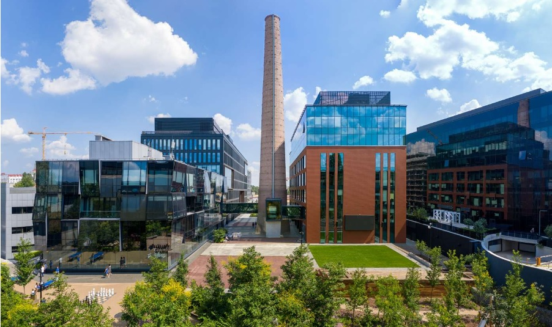
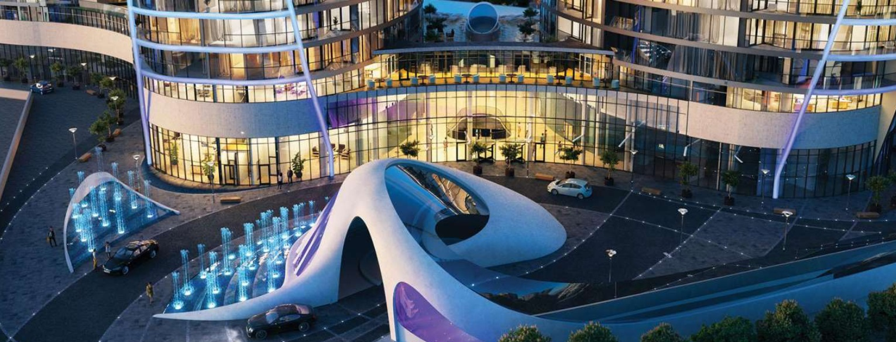
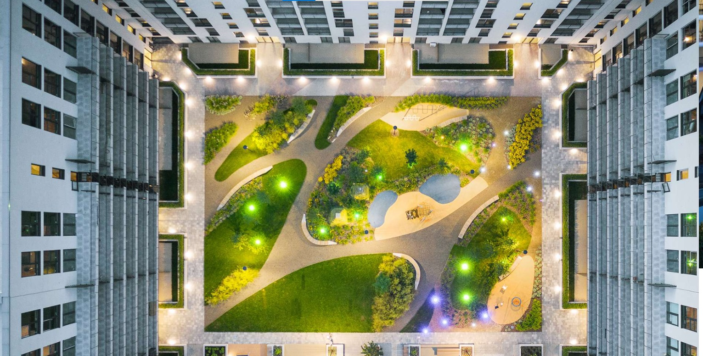
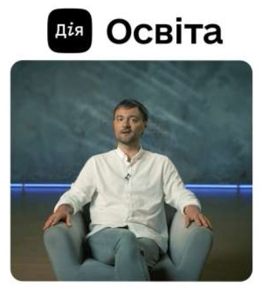

Expérience
15 années d'expérience
89 projets conçus
35 projets réalisés
9 projets en cours de réalisation
6 pays
- Australie
- Azerbaïdjan
- Danemark
- Chypre
- Russie
- Ukraine
17 villes
- Baku
- Berdiansk
- Brisbane
- Chernivtsi
- Copenhagen
- Dnipro
- Ivano-Frankivsk
- Kyiv
- Limassol
- Lviv
- Moscou
- Odesa
- Poltava
- Rivne
- Vinnytsia
- Zaporizhzhia
- Zhytomyr
J'ai fondé mon studio en 2009, avec pour mission de réinventer les espaces urbains grâce à une approche durable et inclusive de l'architecture paysagère. Au fil des ans, j'ai dirigé plus de 80 projets dans cinq pays, toujours en intégrant les habitants, les promoteurs et les pouvoirs publics pour créer des espaces qui résonnent avec la communauté. Pour soutenir l'architecture paysagère en Ukraine, j'organise des conférences, des ateliers et participe à des recherches collaboratives. Mon objectif : développer des environnements qui minimisent les coûts de maintenance tout en maximisant le bien-être et le sentiment d'appartenance des citoyens.
Espace publique d'Unit City
| Années | 2017-2021 |
| Lieu | Ukraine, Kyiv |
| Type | Campus, Bureaux, Places, Rues |
| Surface du projet | 1,3 ha |
La place centrale est un système holistique qui regroupe des espaces de différentes échelles. Elle est modulable et s’adapte à divers scénarios, de la patinoire et des événements sportifs aux expositions d'art et de mode. Nous avons aménagé l’espace avec une pelouse, un auditorium et une forêt densément plantée à proximité de la place, créant ainsi un écosystème naturel contrastant avec l’espace d'innovation. Le caractère industriel historique du lieu est mis en valeur par un aménagement paysager moderne.
Espace publique de la residence "Taryan Towers"
| Années | 2019 — en réalisation |
| Lieu | Ukraine, Kyiv |
| Type | Résidentiel |
| Surface du projet | 1,2 ha |
Le nouveau contour visuel du stylobate souligne la forme des bâtiments et les relie en une unité cohérente. Une vue dégagée depuis la rue et un accès sans barrières pour les piétons ont été créés. L'objet architectural futuriste combine le stylobate, l'entrée du parking souterrain et des fontaines. Un concept de parc sur le toit a également été développé, incluant une cascade avec un lac, un jardin tropical et magique, ainsi que des espaces de détente et de contemplation.
Espace extérieure de la résidence 'Rybalsky'
| Années | 2017 — 2019 |
| Lieu | Ukraine, Kyiv |
| Type | Résidentiel |
| Surface du projet | 0,30 ha |
Dans la conception de la structure du cours intérieur, l'idée reflète les différentes variations du mouvement de l'eau. Les contours doux des « vagues » créent une base harmonieuse pour former des collines où planter la végétation et permettent de diviser les différentes zones de la cour, tout en renforçant l'identité du quartier résidentiel.
Projet 4

Description
Projet 5

Description
Projet 6

Description
Actualités
Qui et comment crée des espaces publiques
L'intervention du paysagisme dans différents contextes - Lviv Urban Forum
Architecture du paysage : repenser l'avenir à partir d'un passé totalitaire | Court métrage